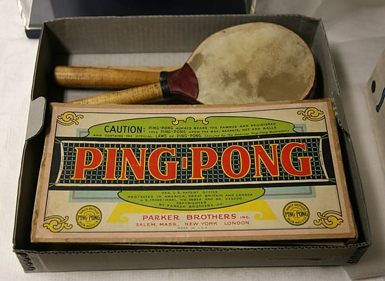
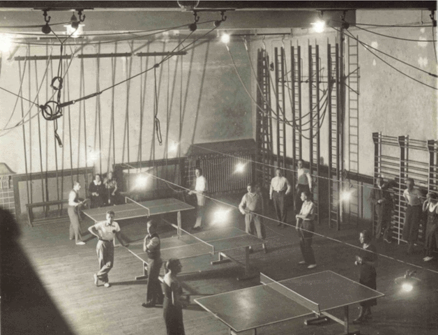

History of table tennis
More Sections:
How to play table tennis
Rules and Regulations
Know how to play doubles
Learn the basic strokes
Executing different strokes in Table tennis
Who invented table tennis?
Table Tennis originated as a table version game of lawn tennis. In 1880, the upper-class inhabitants of Victorian England started playing table tennis as an after-dinner game in the night party.
1880 – 1901: The Era of Invention of Table Tennis
This timeline on the history of table tennis will give you a brief idea about the development of the game over the years.At that time, the upper-class people of England loved to play Lawn Tennis, and in the winter, due to freezing weather conditions, it was very tough to play lawn tennis outside.Then the table version of lawn tennis came into the picture. This new game featured a sprung racket, rubber balls of 30 mm diameter, a table surrounded by a wooden fence along its perimeter, and an extended net up to the side of the table.
1901 – 1926: Trademark Rights of Table Tennis
In 1901, the British manufacturer J. Jaques & Son Ltd trademarked the game with the name ping pong that featured exclusively Jaques’s equipment to play the game.In the United States, the Parker Brothers bought the trademark rights from Jaques which came with the same scenario as in England. 
In the same year, James W. Gibb, a British enthusiast discovered the celluloid ping pong ball that gave the game a new dimension. Another man, G. C. Goode invented the racket with a combination of a wooden blade and pimpled rubber, where the rubber was pasted on the surface of the blade.
As the game was gaining popularity, many organizers came with initiatives for tournaments. The first unofficial world championships that held in the year 1902, gave the game a major boost in popularity.

1926 – 1950: Formation of ITTF and Era of Europe Dominance
1926, is the memorable year of the history of table tennis. International Table Tennis Federation (ITTF) was formed with Austria, India, Sweden, Czechoslovakia, Denmark, England, Germany, Hungary, and Wales as associate members. In the year 1926, ITTF organized the first official table tennis World Championships in London. This year also witnessed the birth of another table tennis association, i.e. the United States Table Tennis Association.
Between 1926 to 1935, Hungary won all the World Championship. The longest rally took place in the World Championship, 1937 in Prague, Czechoslovakia. The first point continued over two hours due to pushing style play.
This is also the era of classic hard bat.
1950 – 2014: Era of Modern Table Tennis
In the year, 1950, the introduction of sponge as an underlying material of the table tennis racket was a revolution in the game of table tennis. As a result, the combination of sponge and rubber top increased the amount of spin and speed drastically.
1952 – 1970: Era of Asian Dominance
Japan became the first non-europian country to win the 1952 World Championship. After that, in 1956, a Japanese female player won the World Championship and ended the European dominance in female table tennis.
In 1959, China won the World Championship for the first time and started to dominate the table tennis world. Over the years, China won several World Championships and became the king of table tennis.
1970 – 2000: Rise of Sweden and Use of Speed Glue
However, China’s dominance was interrupted in 1970 with the rise of Sweden. For the three decades from 1971, Sweden overrode China with top players like Erik Lindh, Jan-Ove Waldner, and Peter Karlsson. Sweden won 1989, 1991, and 1993 team events and World Championship titles in 1989 and 1991 in Men’s category.
Further increase of spin and speed came up in the year 1980 with speed glue for pasting the rubber on the surface of the table tennis blade.
1988: Table Tennis became an Olympic Sport
1988 is the most remarkable year in the history of table tennis when the game was first introduced in the 1988 Olympic Games in Seoul with men’s singles, men’s doubles, woman’s singles, and woman’s doubles. China and South Korea won two titles each.

2000 – 2014: Development of Table Tennis
In the year 2000, ITTF took a major step in view of the popularity of table tennis. They increased the ball diameter from 38 mm to 40 mm. The larger ball tends to be slower and spins less which brings more excitement to the game.
Next year the development came up with a total change of scoring in table tennis, from 21 points to 11 points. ITTF changed the scoring pattern with a game of 11 points from 21 points. Also, the consecutive serve for each player was brought down to 2 serves from 5 serves in a row.
In 2014, we witnessed the last modification, when ITTF introduced plastic as a material for table tennis balls.
The fan following of table tennis has grown up significantly. It is the utmost effort of ITTF that turns table tennis into a very exciting game to watch with a fan following of 875 million.